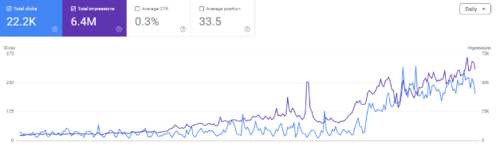
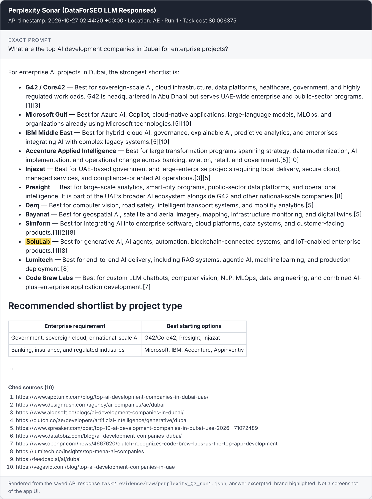
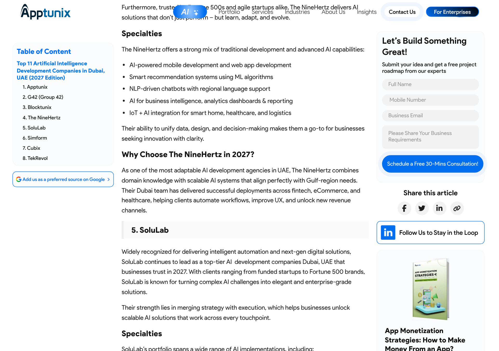

| Company | Data and AI consulting, competing with Accenture, TCS and Deloitte. This is the same position SoluLab is in. |
| My role | Growth Marketing Manager, Dec 2024–present. I built the SEO function from zero and ran the AEO/GEO programme across 200+ target queries. |
| Constraint | No paid search. Organic and PR only. |
| Platforms | Google AI Overviews, ChatGPT, Perplexity, Gemini. |
Three interventions that mattered most:
Results:
| Metric | Result |
|---|---|
| AI visibility | 50+ Google AI Overview placements, plus citations in ChatGPT, Perplexity and Gemini alongside Accenture, TCS and Deloitte |
| Pipeline | $1M+ in 6 months. More than 10% of monthly pipeline came from AI referrals. |
| Revenue | $450K realised, organic only |
| Traffic | 0 → 65K monthly sessions in 12 months. US and Western leads +25% month on month. |
| Search Console | 22.2K clicks, 6.4M impressions. Top service page: 9.67K clicks, 1.2% CTR. Top blog: 8.61K clicks, position 5.6. |

Failed experiment: I scaled pages programmatically with templated location pages ("[service] in [location]") and tool pages ("[service] for [tool]"). It didn't prove effective. Lesson: templated pages add URLs, not reasons to be chosen, so I moved the effort to substantive service pages, case studies, PR and community distribution. SoluLab's Dubai and Saudi location pages show the same pattern (see Task 2).
The same method elsewhere:
Method:
task2-evidence/).| ID | Exact prompt | ChatGPT | Perplexity | AI Mode | Competitors named most | Most-cited third-party sources |
|---|---|---|---|---|---|---|
| Q1 (US) | "Which companies should a US enterprise consider to build custom AI agents? Give me a shortlist with a reason for each." | 0/3 | 0/3 | 0/3 | Accenture, IBM, EPAM, Cognizant, LeewayHertz | pixelmatters.com, christianandtimbers.com, hudasoft.com lists |
| Q2 (US) | "What are the best generative AI development companies in the USA for building an enterprise LLM application?" | 0/3 | 0/3 | 0/3 | LeewayHertz (9/9), EPAM, Slalom, HatchWorks AI | tech.us (7/9 runs), agencycluster.com |
| Q3 (UAE) | "What are the top AI development companies in Dubai for enterprise projects?" | 0/3 | 3/3 recommended | 0/3 | Presight, G42/Core42, Microsoft, IBM, Simform | lumitech.co, apptunix.com, designrush.com, masterofcode.com |
| Q4 (KSA) | "Recommend AI consulting firms in Saudi Arabia that can help a company with AI strategy and implementation." | 0/3 | 0/3 | 0/3 | McKinsey, BCG, Accenture, local Saudi consultancies | clutch.co (Saudi), labarna.ai, local firm sites |
| Q5 (US) | "How much does it cost to hire a company to build an AI agent, and which firms offer this service?" | 0/3 | 0/3 | 0/3 | Accenture, LeewayHertz, Moveworks | vantasoft.com, productcrafters.io cost guides |
Headline: SoluLab was mentioned in 3 of 45 runs and solulab.com was cited in 0.
What the evidence shows:

Perplexity, Oct 27, 2026, UAE. SoluLab's citations [1] and [8] are third-party lists. Rendered from the saved API response.
Source [1]: Apptunix "Top 11 AI development companies in Dubai". Browser screenshot, Oct 27, 2026.One opportunity per query:
| ID | Opportunity |
|---|---|
| Q1 | Get onto the cited US AI-agent lists that include LeewayHertz but not SoluLab (pixelmatters, christianandtimbers, nerdheadz, inoxoft, signity). Ask Hudasoft, ScalaCode and DBB to update SoluLab's entry with a fresh case study. |
| Q2 | Get into tech.us and agencycluster.com. Fix /generative-ai-development-company/, which is 3.3 MB of HTML; ChatGPT retrieved SoluLab's consulting page instead. |
| Q3 | Repeat the Perplexity win on ChatGPT and AI Mode sources: masterofcode.com, emtech.ae, quytech.com, and the Clutch UAE and DesignRush profiles. |
| Q4 | Build a Saudi footprint first: a Clutch Saudi listing, outreach to labarna.ai, and an Arabic version of the KSA page. |
| Q5 | Rebuild the AI-agent cost content as one hub that opens with SoluLab's real price bands (E2). |
Also: SoluLab's own facts conflict. The site says 1,500+, 500+ and 150+ projects in different places, and both "US-based" and Ahmedabad. That weakens every recommendation (E3).
Limitations: these are API runs from a single day. A second test day is needed before any rate counts as stable.
| Hypothesis / cluster | List-type prompts are built from a small set of cited third-party pages, so more and better placements there raise SoluLab's mention rate. Cluster: vendor-selection prompts Q1–Q4 plus 6 variants. |
| Action | Rank the cited URLs from Task 2 by frequency, then work the top 15. Directories: complete the AI services, UAE and KSA service areas, and get 5 new verified reviews. Editorial lists: pitch inclusion with an evidence pack (2 case studies with metrics, Clutch rating, a named expert). Media: 2 bylined articles, one US and one Gulf. Forums: disclosed answers from named engineers. |
| Why | Task 2 shows the mechanism directly: SoluLab's only recommendation came through two lists, and the competitor present on 10 of 15 lists gets named. |
| Baseline | Mentioned in 3 of 36 runs (8%). On 3 of the 15 most-cited lists, against LeewayHertz on 10. |
| Success / period | On at least 8 of 15 lists by week 6. Mention rate up at least 15 points at weeks 6 and 8. At least 2 AI-attributed inquiries by week 10. |
| Effort / owner | About 30 hours over 6 weeks. Owner: marketing executive, following the SOP in Task 4. |
| If it fails | If placements land but mentions don't move, re-check which sources are cited and shift to directories, then run E3. If placements don't land, offer authors data or an expert quote instead of "add us". |
| Hypothesis / cluster | Cost prompts cite pages that give concrete price ranges. Cluster: Q5 plus 4 cost variants. |
| Action | Make /how-much-does-it-cost-to-build-an-ai-agent/ the hub, with the run-cost and MVP posts as spokes. Open with a 50-word answer giving SoluLab's real range. Add a scope × cost × timeline table from the last 12 months of quotes, 3 anonymized project examples, sourced statistics, and a visible "Updated" date. Push through IndexNow and Search Console. Control: leave the LLM-cost post unchanged. |
| Why | GEO research (Aggarwal et al., KDD 2024) found that adding statistics and citations raised visibility by up to about 40%. SoluLab's cost posts currently open with "it depends". |
| Baseline | Q5: cited 0/9, and the cost page wasn't even retrieved. |
| Success / period | Cited in at least 25% of runs in weeks 4–6, with the control flat. |
| Effort / owner | About 14 hours. Owner: content lead, with sales input on prices. |
| If it fails | Confirm the new version is indexed in Bing and Google. Then distribute the same table through a named expert's LinkedIn article and a cited third-party cost guide. |
| Hypothesis / cluster | Buyers vet vendors through AI, so consistent facts make those answers more accurate. Cluster: "What is SoluLab", "Is SoluLab legit", "SoluLab reviews", "SoluLab vs LeewayHertz". |
| Action | Write a one-page fact sheet. Fix the conflicting stats strips and the schema address. Update the About page, schema and llms.txt. Align and merge external profiles (Clutch, GoodFirms, DesignRush, Built In, Crunchbase, LinkedIn). Publish a Reviews page. |
| Why | The facts are verifiably inconsistent today, and every fix is under SoluLab's control. It also protects deals already in the pipeline. |
| Baseline / success | Measure fact accuracy on 5 brand prompts before launch. Target at least 80% accuracy and zero contradictions by week 8. |
| Effort / owner | About 14 hours. Owner: marketing executive. |
| If it fails | Fix the specific sources cited in wrong answers. Model-memory errors lag, so re-measure quarterly. |
Owner: marketing executive. Reviewer: LLM visibility lead. Cycle: 2 weeks. Inputs: the prompt panel, the evidence pack (2 case studies, Clutch link, expert bio, a two-line differentiator), and the fact sheet. Tools: DataForSEO (or manual runs with screenshots), Google Sheets, directory dashboards, an email finder, HubSpot. Deliverables: a source tracker, an outreach log, updated profiles, and a fortnightly one-page report.
Steps:
Quality-control checklist:
Report (fortnightly): sources listed (n/15), mention rate by platform and prompt, new or lost cited sources, AI-referral sessions, and AI-attributed inquiries.
Repeat, improve or stop:
Attribution:
Commercial math: these assumptions are to be replaced with SoluLab's CRM rates.
Q1 order:
Reported weekly: mention rates, AI referrals, AI-influenced SQLs, pipeline value and closed revenue against target.
Prepared with AI assistance for data collection and analysis. AI-platform results come from the dated runs described in Task 2.